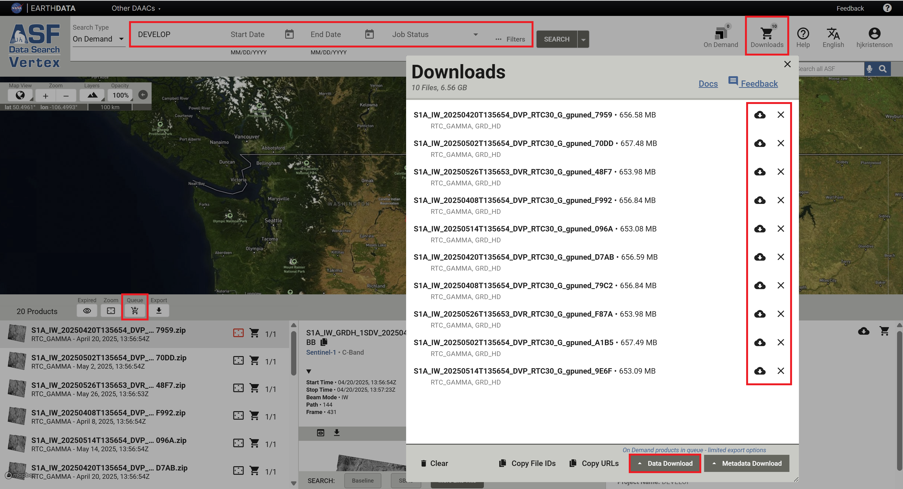

Downloading HyP3 Products¶
There are a number of interfaces available for downloading products generated On Demand using the HyP3 platform.
- On Demand Search interface in Vertex
- Programmatically using the HyP3 API or HyP3 Python SDK
On Demand Search in Vertex¶
The On Demand Products Search Type in Vertex allows you to view the status of any job you have submitted for processing and download any product that has been successfully processed. You will need to sign in to Vertex with Earthdata Login credentials to search for On Demand products.
Refer to the On Demand Products section of the Vertex User Manual for more information about On Demand search functionality.
Downloading Individual Products¶
Click on an item in the search results to view download options. You can add the product to the Download Queue using the cart icon in either the Search Result (left) or File (right) pane, or launch a direct download in your browser window by clicking the cloud download icon in the File pane.

To view the download queue, click the Downloads icon in the top right of the Vertex web interface. The Download Queue interface provides options for direct download of individual items along with bulk download options.
Downloading Multiple Products¶
You can add products to the Download Queue one by one using the cart icon, or you can search your On Demand products for a specific set of products and add them all to the Download Queue using the Queue button at the top of the results list.
There are a number of options available for filtering your On Demand products, with the most useful being the Project Name field. You can assign a project name when submitting jobs for processing to easily group items together that are used for the same project.

Once you've added products to the Download Queue, either by using the individual cart icons or the bulk Queue button, click the Downloads icon in the top right of the Vertex web interface. When you open the Download Queue, you have the option to launch direct downloads of individual items in the list, or you can choose to remove individual items from the queue.
To download all of the products listed in the Download Queue, click the Data Download button at the bottom of the queue window and choose from the available options:
Download Python Script¶
The most robust approach for downloading very long lists of products is the Download Python Script option. This downloads a python script that you can launch on your computer.
- You will be prompted for your Earthdata Login credentials if necessary, then the script will work through the list of download URLs, downloading them one by one until all of the items have been downloaded.
- If the script is interrupted during the download, you can simply re-run the same script; it will recognize any products that have already been successfully downloaded and continue with the remaining items.
- To use this option, you must have a Python installation available on your computer.
Download All¶
Chrome users may find the Download All option useful. This option takes advantage of the multi-threading capability in Chrome to download several items at a time.
Copy URLs¶
You can also click on Copy URLs (located next to the Data Download button) to copy a list of the download URLs
for the files in your Download Queue, which you can then paste into your own download script or use with the
wget utility.
Programmatic Access¶
The HyP3 API and the HyP3 Python SDK provide programmatic access to On Demand products.
The name parameter is referred to as "Project Name" in the Vertex interface, but is often referred to as "Job Name"
in documentation for the programmatic interfaces. This parameter is helpful in grouping together jobs submitted as
part of a particular analysis effort. It facilitates management and download of groups of jobs, makes it easier to
share products with colleagues, and allows users to access their HyP3-generated products using the notebooks available
on ASF's OpenSARLab.
The HyP3 API allows easy access to job URLs through the Swagger UI, but the HyP3 Python SDK is better suited for scripting search and download workflows for On Demand products.
Accessing Products Using the HyP3 API¶
The HyP3 API provides the ability to Query Submitted Jobs.
Authentication¶
To look up your On Demand jobs, you will need to have a valid ASF Earthdata Login (asf-urs) session cookie, which you can get by signing in to Vertex with your Earthdata Login Credentials. You can also authenticate using an Earthdata Login token. Refer to Authentication with HyP3 API documentation for more information about the available authentication methods.
Entering Search Parameters¶
Note that the parameter fields in the UI are populated with defaults. You will need to edit or delete any of the default values that do not align with your desired search parameters. The start and end date fields reference the date/time the jobs were submitted, not the date/time of the acquisitions used to generate the products.
Response JSON¶
The response from your
Get Jobs API request
includes download links for the browse images and thumbnails used to display the product contents in Vertex,
as well as the link to the complete product package with a .zip extension.
Here is an example of a response JSON:
{
"jobs": [
{
"processing_times": [
836.557
],
"browse_images": [
"https://d3gm2hf49xd6jj.cloudfront.net/6f917fec-9c2f-42fb-a55c-3c4fe2e0520b/S1A_IW_20250420T135654_DVP_RTC30_G_gpuned_7959.png",
"https://d3gm2hf49xd6jj.cloudfront.net/6f917fec-9c2f-42fb-a55c-3c4fe2e0520b/S1A_IW_20250420T135654_DVP_RTC30_G_gpuned_7959_rgb.png"
],
"credit_cost": 5,
"priority": 9960,
"execution_started": true,
"job_id": "6f917fec-9c2f-42fb-a55c-3c4fe2e0520b",
"name": "DEVELOP",
"thumbnail_images": [
"https://d3gm2hf49xd6jj.cloudfront.net/6f917fec-9c2f-42fb-a55c-3c4fe2e0520b/S1A_IW_20250420T135654_DVP_RTC30_G_gpuned_7959_thumb.png",
"https://d3gm2hf49xd6jj.cloudfront.net/6f917fec-9c2f-42fb-a55c-3c4fe2e0520b/S1A_IW_20250420T135654_DVP_RTC30_G_gpuned_7959_rgb_thumb.png"
],
"request_time": "2025-06-10T07:47:28+00:00",
"logs": [],
"user_id": "hjkristenson",
"status_code": "SUCCEEDED",
"job_parameters": {
"speckle_filter": false,
"include_inc_map": false,
"dem_name": "copernicus",
"radiometry": "gamma0",
"granules": [
"S1A_IW_GRDH_1SDV_20250420T135654_20250420T135723_058841_074ABD_E7BB"
],
"scale": "power",
"dem_matching": false,
"resolution": 30,
"include_rgb": true,
"include_dem": false,
"include_scattering_area": false
},
"files": [
{
"s3": {
"bucket": "hyp3-edc-prod-contentbucket-1fv14ed36ifj6",
"key": "6f917fec-9c2f-42fb-a55c-3c4fe2e0520b/S1A_IW_20250420T135654_DVP_RTC30_G_gpuned_7959.zip"
},
"filename": "S1A_IW_20250420T135654_DVP_RTC30_G_gpuned_7959.zip",
"size": 656581903,
"url": "https://d3gm2hf49xd6jj.cloudfront.net/6f917fec-9c2f-42fb-a55c-3c4fe2e0520b/S1A_IW_20250420T135654_DVP_RTC30_G_gpuned_7959.zip"
}
],
"expiration_time": "2025-06-25T00:00:00+00:00",
"job_type": "RTC_GAMMA"
},
],
}
The download URL for the full product package is provided near the end of the response for each job in the jobs
array of the response JSON. The value is paired with the url key in the files array.
You can copy and paste each product URL directly into a browser window, or script a workflow to pull all the product URLs from the response JSON into a bulk download function or text file. It may be more convenient to use the HyP3 Python SDK to script bulk download functionality.
Accessing Products using the HyP3 Python SDK¶
The HyP3 Python SDK is a wrapper around the HyP3 API, and provides convenient search and download functionality for On Demand products (HyP3 jobs). This example notebook demonstrates how to use the SDK for a range of workflows.
Authentication¶
To access product information using the SDK, you will need to
authenticate when initializing the HyP3 object.
You can add Earthdata Login (EDL) credentials to your local .netrc file, or use a prompt to enter either
EDL credentials or an EDL token manually. Refer to the
Authenticate HyP3 in the SDK notebook
for authentication guidance and sample code.
Search for Jobs¶
Use the find_jobs method from the HyP3 class to generate a list of products to download (batch), then use the
download_files method from the Batch class to download all the products in the list. Refer to the
Finding Existing Jobs section and the
HyP3 SDK API Reference
for more information.
Product Packaging and Extraction¶
On Demand products from ASF are delivered as zip files. The files contained in the zip archive vary by product type, but the zip archive always includes an internal directory containing all the individual files. The directory names can be quite long, and some users (particularly those using a Windows operating system) will need to make accommodations in order to successfully extract the contents.
Extracting Product Packages¶
When extracting the contents of a HyP3-generated zip file, you may need to specify a destination directory to prevent the extraction of the internal directory to a directory named with the full zip file name. For many of the products, this combination of directories would result in paths that are longer than can be used with Windows operating systems.
Downloading Individual Files¶
Downloading the full zip file ensures that you have all of the data products as well as auxiliary files and relevant metadata, but some users may not require all of the files included in the product zip archive.
The contents of the zip files can all be accessed directly. Simply replace the .zip at the end of the download URL
with the tag for the specific file you want to download.
For example, for the following download URL for an RTC On Demand product:
https://d3gm2hf49xd6jj.cloudfront.net/76b1a849-c826-428a-966c-55f8bb88f814/
S1A_IW_20250502T135654_DVP_RTC30_G_gpuned_70DD.zip
simply replace the .zip with the desired product extension, such as _VV.tif for the RTC GeoTIFF in VV polarization:
https://d3gm2hf49xd6jj.cloudfront.net/76b1a849-c826-428a-966c-55f8bb88f814/
S1A_IW_20250502T135654_DVP_RTC30_G_gpuned_70DD_VV.tif
You can then paste that URL into a browser window, or use it in a download script, to download only the designated product rather than the full zip archive.
The zip archive contains valuable metadata products, including a readme file that provides information about the workflow used to generate the product and the files included in the product package. New users are advised to download the full archive to ensure they have access to this information and can determine what individual products are required for their application.
Downloading Products Submitted by Other Users¶
You can search for On Demand products processed under a different username. This functionality is a convenient way to share products when collaborating with others, and can be accessed both in Vertex and the HyP3 Python SDK.
Using Vertex¶
Click the Filters button to open the On Demand Search Filters window, and use the User ID filter to enter the username under which the desired job was submitted.

If the user who submitted the job also provides you with the Project Name, you can apply that search filter, as well. The drop-down list in the Project Name field only displays the list for the user who is logged in, so you will not be able to look up another user's list of Project Names using this interface.
Using the HyP3 Python SDK¶
The HyP3 Python SDK provides the capability to search for products submitted by other users. Refer to this notebook to learn how.
Downloading with Wget¶
While authentication is required to look up download URLs for On Demand products, it is not required for actually using the download URLs. This makes it easy to use any method you prefer for downloading the products.
Some users may find the Wget utility useful for downloading a long list of products.
Create a text file containing a list of download URLs (i.e urls.txt). This list can be generated a number of
ways, including but not limited to:
- the Copy URLs functionality in Vertex
- extracting URLs from an API response JSON
- converting a list of download URLs for On Demand product zip files to a list of individual file URLs
You can then use the input file option with Wget to reference the text file containing a list of download URLs.
The command is simply the following:
wget -i urls.txt